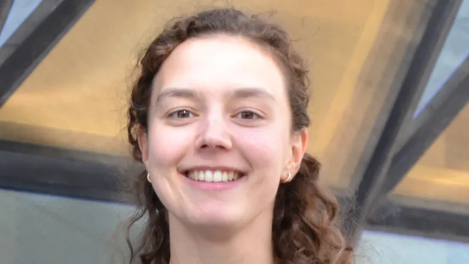
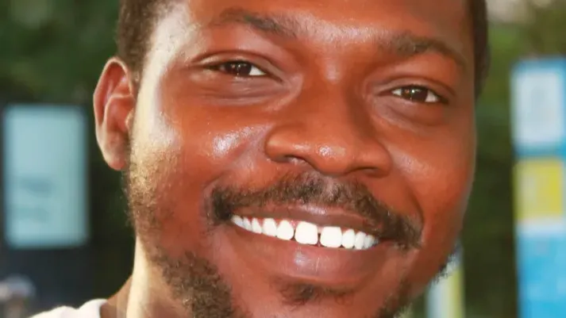
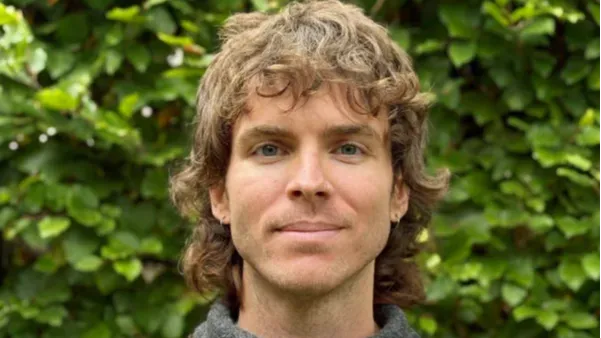
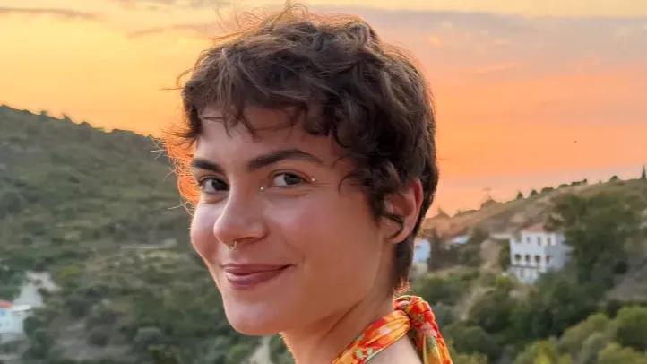

Funded by the European Union under Grant Agreement 101169005
HoloGen Consortium 2026
DC1
I am a computational biologist passionate about integrating multi-omics data to understand complex biological systems. I have applied functional genomics approaches to investigate chromatin dynamics and regulatory networks in Norway spruce by characterizing transcription factor binding patterns and their relationship with gene expression. Currently, during my PhD, my research focuses on developing network-based methods to uncover host-microbiota interactions and applying them to multi-omics data from pigs and cattle.
DC2
I'm a Bioinformatician passionate about studying the human microbiome, and I apply data science and data analysis methods to do the same. I have an MSc in Medical Biotechnology and Bioinformatics, and I have also worked in the human gut microbiome industry for 2 years. Currently, my PhD research work is focused on the integration of multi-omics data for microbiome-based disease risk prediction.

DC3
I hold a bachelors and masters degree in Biomedicine and have worked on the 3D'omics project as a research asssistant before joining the HoloGen network. My project aims to provide a hologenomic perspective of host-microbiota spatial organization in order to better characterize interactions and dynamics. The goal is to develop a computational and experimental pipeline to image the microbiome and it's host at a large-scale.

DC4
Trained in microbiology and food biotechnology, I previously studied antimicrobial resistance in housefly-associated bacteria and the longitudinal dynamics of the piglet gut microbiome. I am now a PhD candidate at KU Leuven, where my research at the intersection of microbial ecology and synthetic biology explores bacterial interactions in controlled in vitro systems to reveal the ecological rules shaping synthetic gut communities and their functions.

DC5
After finishing my master’s degree in Molecular Biology and Genetics, I started working with microbiome profiling. I had the opportunity to engage with different research projects in the context of human health, where I gained experience with DNA purification of challenging low-biomass samples and high-throughput qPCR-based assessments of microbial communities. Through my PhD, I am shifting my attention from the gut of humans to the gut of lizards. Over the next years, I aim to explore the role of the gut microbiota in mediating the evolutionary dietary shifts observed in Mediterranean wall lizards.
DC6
I am a dedicated pharmacist and analytical chemist with a strong interest in leveraging advanced analytical tools, particularly mass spectrometry, to address complex biological questions. I hold an MSc in Excellence in Analytical Chemistry, and I have joined Afekta as a doctoral researcher through the MSCA Hologen project. In my project, I aim to investigate the dynamics of microbiota–host interactions under infection and antimicrobial perturbations using a longitudinal multi-omics approach.
DC7
I am a biologist based at the University of Copenhagen (UCPH) Globe Institute. My PhD project is titled, “Ecological aspects and conservation implications of microbe-driven adaptation in newts.” I hold a BA in Marine Sciences and an MSc. in Marine and Coastal Management. My project aims to investigate the extent to which microbiota confer extra adaptive capacity to wild newts and salamanders under varying climatic conditions.
DC8
I am trained in animal genetics, breeding and integrative biology. I previously worked on Phenomic and Genomic prediction of milk quality traits in three French dairy cattle breeds at INRAE, where I integrated Mid-infrared spectral with SNP genotype information. I am currently a PhD candidate at the Norwegian University of Life Sciences through the Marie Skłodowska-Curie Actions HoloGen Doctoral Network. My PhD research focuses on how interactions between the host genome and gut microbiome influence feed efficiency and omega-3 fatty acid content in Atlantic salmon. My goal is to quantify the relative contributions of host genetics, the microbiome, and their interaction effects on these traits, and to integrate amplicon sequence variants with the Salmon Microbial Genome Atlas to improve the functional interpretation of the gut microbiota. In the coming years, I want to understand how microbial genes, heritable microbial taxa, and host genetics shape resource efficiency traits, both in aquaculture and livestock production.

DC9
I am a computational biologist with an MSc in Environmental Biology, passionate about understanding the complexity of the biological world through genomic lenses! I have applied population and functional genomic approaches to investigate genetic diversity and regulatory mechanisms in fish of aquaculture importance. In my PhD, I will explore host-microbiome interactions in production and wild animals, with a particular interest in the swine gut microbiome and its broader ecological and functional implications.
DC10
I have a bachelor’s and master’s degree in Physical and Biomolecular Sciences from the University of São Paulo in São Carlos. I have worked previously on omics data such as RNA-Seq and microarrays both during my undergraduate years and during my masters. My PhD project at the University of Turku is to analyse metagenomic data from the population of Finland to evaluate geographical variations in the human gut microbiome as well as uncover possible relationships with chronic diseases such as diabetes and high blood pressure.
DC11
I am a bioinformatics researcher, and I obtained my bachelor’s and master’s degrees from Northwest A&F University (NWAFU), where my previous work focused on plant diseases using large-scale multi-omics and epitranscriptomic analyses. I also have a strong passion for evolutionary biology, leveraging multi-omics data to understand how organisms adapt to their environments. My current research investigates the early-life gut microbiome, with a focus on Bifidobacterium—a key genus in infant health. I aim to characterise its global diversity and lifestyle-associated variation, and to uncover how microbial composition and function influence human development and disease risk in infants.
Funded by the European Union under Grant Agreement 101169005
HoloGen Consortium 2026